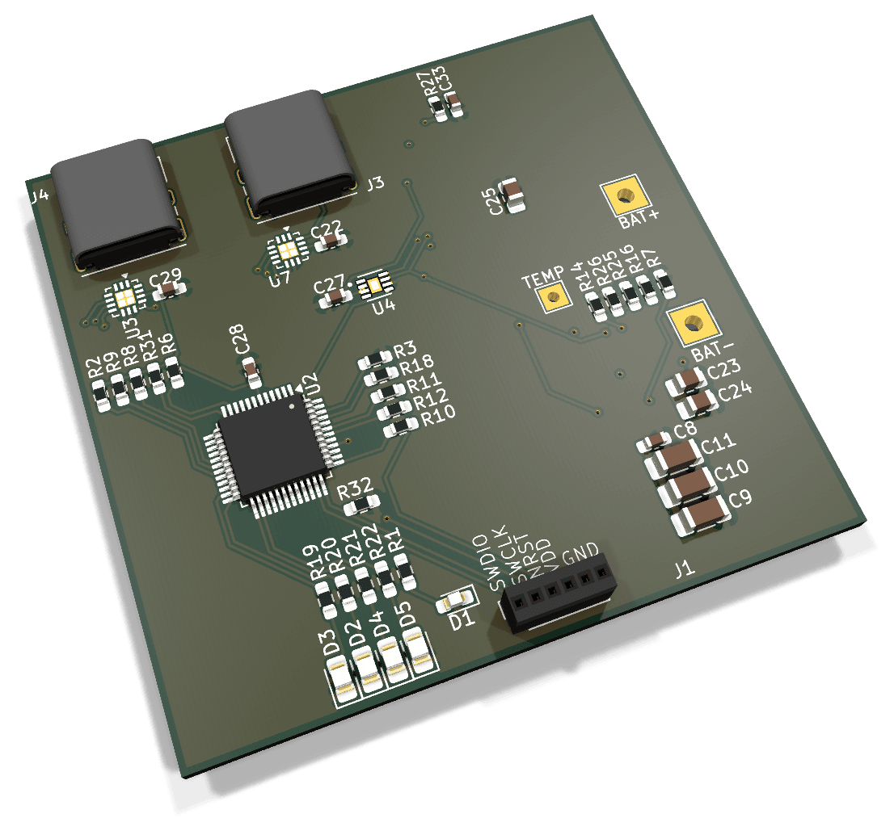

In progress2026
Two-Stage CMOS Folded Cascode Amplifier
Full-custom two-stage CMOS op-amp with a folded-cascode input stage on the GlobalFoundries 180 nm open PDK, targeting a Tiny Tapeout shuttle. Xschem, Ngspice and Magic.
Here is an overview on some projects I have been working on. There are a build-up of both industry and school knowledge put into application. As they say, self-learning is the best learning (I don't know who said that).
Full-custom two-stage CMOS op-amp with a folded-cascode input stage on the GlobalFoundries 180 nm open PDK, targeting a Tiny Tapeout shuttle. Xschem, Ngspice and Magic.

Complete GaN 900 V evaluation board platform integrating AC-ZVS, DC-ZVS and Buck/Boost topologies into one suite, with variable frequency, duty cycle and deadtime control at nanosecond precision. Synchronous control of the active clamping circuit enables nanosecond-precise RDS(on) measurement in high-frequency applications, up to 600 kHz switching with 1 GHz measurement resolution. Contactless control via a Python GUI over differential signaling. Validated and tested in both AC and DC applications.

Started because snacks kept disappearing from a room during the day. This battery-powered sensor detects someone walking in and sends a Wi-Fi notification, pairing a low-power motion sensor with a radar that only wakes when needed. Two board revisions built and tested so far.

5000 mAh single-cell Li-ion pack delivering 20 W over USB-C PD. Buck/boost output holds the PD voltage across the full state of charge. 54 × 52 mm, 6 layer.

Dependency-free C11 model of NAND at block/page level, plus an FTL with out-of-place updates, greedy garbage collection and wear levelling.

Two-layer flight board aggregating six analog sensor ports and reporting over CAN. 12 V rocket bus stepped to 3V3, external crystal, designed for a rough ride.

Exploring variable buck converter LM2596S-ADJ based step-down accepting 8–40 V in, with output set by a trim resistor. A small two-layer card built to drop into other test setups and explore efficiency of IC.

STM32 door/window intrusion alarm designed around a 70 dB output range chosen specifically for hard-of-hearing users. Prototype plus design documentation.